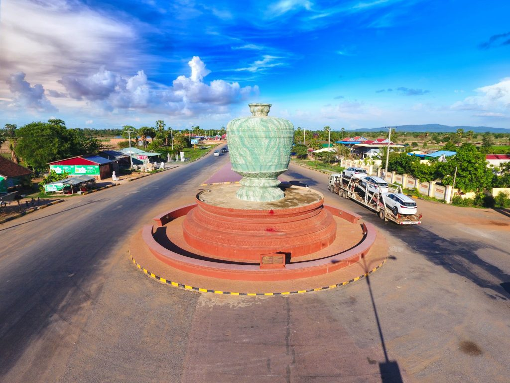

ការពិពណ៏នាអំពី ខេត្តនីមួយៗនៅក្នងប្រទេសកម្ពុជា
ទំព័រដើម
តាកែវ
ភ្នំពេញ
កែប
ព្រះសីហនុ
ស្វាយរៀង
កំពង់ធំ
បាត់ដំបង
ពោធ៏សាត់
សៀមរាប
រតនគីរី
មណ្ឌលគីរី
ក្រចេះ
ត្បូងឃ្មុំ
កំពង់ចាម
ព្រៃវែង
កណ្តាល
ឧត្តរមានជ័យ
កំពង់ឆ្នាំង
កំពង់ស្ពឺ
បន្ទាយមានជ័យ
កោះកុង
ប៉ៃលិន
កំពត
ស្ទឹងត្រែង
ព្រះវិហារ
ទំនាក់ទំនង
ខេត្តពោធ៏សាត់

ព័ត៌មានសង្ខេបអំពីខេត្តពោធ៏សាត់
> ខេត្តពោធិ៍សាត់ជាខេត្តមួយនៅភាគខាងលិចនៃប្រទេសកម្ពុជា។ ខេត្តពោធិ៍សាត់មានទីរួមខេត្តនៅ ក្រុងពោធិ៍សាត់។ ខេត្តពោធិ៍សាត់គឺជាខេត្តមួយដែលសិ្ថតនៅក្នុងតំបន់បឹងទនេ្លសាប មានទីតាំងនៅទិសបចិ្ចមនៃប្រទេស។ ខេត្តពោធិ៍សាត់មានប្រជារាស្ត្រ ៣៦០ ៤៤៥ នាក់ ក្នុងនោះ ប្រុស ១៧២ ៨៩០ នាក់ ស្រី ១៨៧ ៥៥៥ នាក់ ។ ស្រ្តី ៥២,០ ភាគរយនៃប្រជារាស្ត្រសរុបក្នុងខេត្ត [២]។ ស្ថិតនៅភាគខាងលិចនៃប្រទេស និងមានព្រំប្រទល់ពីខាងជើងជាប់ខេត្តបាត់ដំបង បឹងទន្លេសាប ខាងលិចជាប់ខេត្តកំពង់ឆ្នាំង ខាងត្បូងជាប់នឹងខេត្តកំពង់ស្ពឺ ខេត្តកោះកុង និងខាងលិចជាប់នឹងប្រទេសថៃ។ ហើយក៏ស្ថិតនៅចន្លោះ បឹងទន្លេសាប និងចុងខាងជើងនៃជួរភ្នំក្រវាញ។ ទន្លេពោធិសាត់កាត់ខេត្តនេះហូរពីជួរភ្នំក្រវាញនៅភាគខាងលិចទៅទន្លេសាបខាងកើត។
> ខេត្តនេះរួមមាន ៦ស្រុក ៧សង្កាត់ ៤២ឃុំ និង ៤៩៥ភូមិ ។ ប្រជារា្រស្តនៅក្នុងខេត្តនេះមាន ៣,២ភាគរយនៃប្រជារា្រស្តទូទាំងប្រទេសកម្ពុជា។ ដង់ស៊ីតេប្រជារា្រស្តរបស់ខេត្ត គឺ២៨ នាក់ ក្នុងមួយគីឡូម៉ែត្រការ៉េទាបជាង ដង់ស៊ីតេថ្នាក់ជាតិដែលមានតែ ៦៤នាក់ ក្នុងមួយគីឡូម៉ែត្រការ៉េ ។
> ក្រៅពីខ្លឹមសារដកស្រង់ចេញពីសៀវភៅកម្ពុជសុរិយាឆ្នាំ២០០៣ ត្រង់ទំព័រ ៦២នេះ នៅក្នុងវចនានុក្រមសម្ដេចសង្ឃរាជ ជួន ណាត ត្រង់ទំព័រ ៧៧៩ បញ្ជាក់ថា ពោធិ៍សាត់ គឺជាឈ្មោះខេត្តមួយក្នុងកម្ពុជារដ្ឋ នៅជាប់ខាងកើតខេត្តបាត់ដំបង។ តាមពាក្យដំណាលពីព្រេងនាយថា មានដើមពោធិ៍តូចមួយរសាត់ច្រាសទឹកមកជាអស្ចារ្យប្លែក ហើយគេបានស្រង់យកទៅដាំនៅកន្លែងមួយ។ ដោយហេតុដូច្នេះ ទើបឲ្យឈ្មោះភូមិប្រទេសនោះថា ពោធិ៍សាត់ ព្រោះពាក្យថា រសាត់ និងសាត់ ជាពាក្យតែមួយអាចប្រើជួសគ្នាបាន។ លុះសំណេរជាយូរអង្វែងមក បានក្លាយជា "ពោធិ៍សាត់" រហូតដល់សព្វថ្ងៃ។
> ខេត្តពោធិ៍សាត់ មានស្រុកចំនួន ៨ ស្រុក :
- ស្រុកកណ្តោល
- ស្រុកពោធិ៍សាត់
- ស្រុកត្រពាំងកណ្ដាល
- ស្រុកកំពង់សៀម
- ស្រុកទួលស្រុក
- ស្រុកត្រពាំងតាកែវ
- ស្រុកបន្ទាយរាំង
- ស្រុកកំពង់ត្នោត